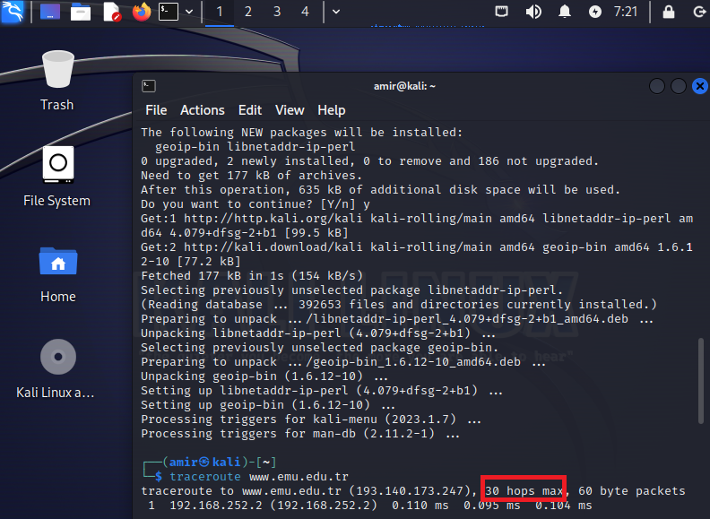
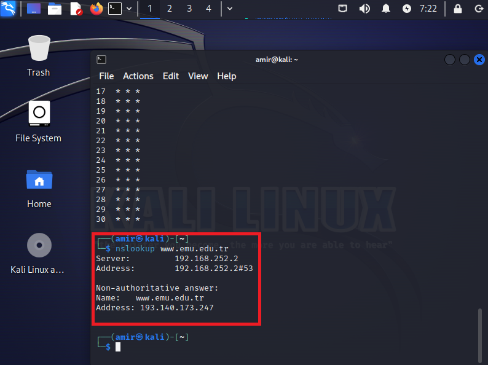
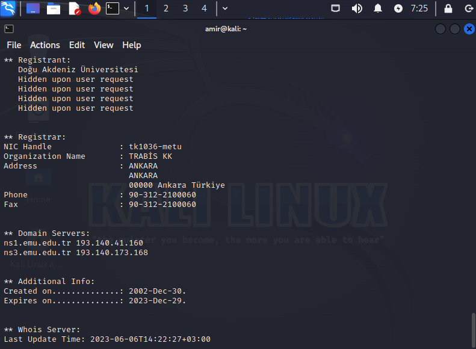
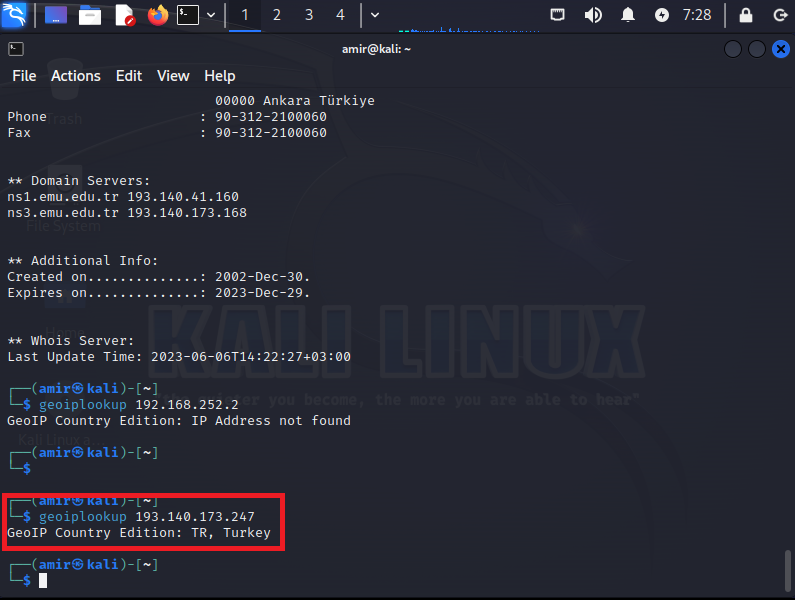

In this activity, we performed a basic network scan using standard tools such as traceroute, dig, and nslookup. The objective was to gain insights into network connectivity, DNS resolution, and investigate potential network issues.To begin the scan, we referred to the provided website that contained instructions on using traceroute, dig, and nslookup. These tools are commonly available on most operating systems and are widely used for network troubleshooting and analysis.Traceroute was utilized to map the route taken by network packets from our local system to a target destination. By tracing the network path, we could identify each intermediate hop, measure the round-trip time, and potentially detect any network bottlenecks or issues along the way.
Dig (Domain Information Groper) was employed to perform DNS queries and retrieve information about domain names, IP addresses, and DNS records. This helped us investigate DNS resolution, verify DNS configurations, and gather essential information about the target domain.Nslookup, another DNS-related tool, was used to query DNS servers and obtain specific details about a domain, such as its IP address and associated DNS records. This provided us with valuable insights into the DNS infrastructure and aided in troubleshooting potential DNS-related problems. Throughout the activity, we referred to the reading material for further assistance. The reading materials provided additional context, guidance, and best practices related to performing network scans using traceroute, dig, and nslookup.
By conducting this basic network scan, we gained a better understanding of network connectivity, network paths, and DNS resolution. This information is crucial for identifying and resolving potential network issues. Using the knowledge gained, we were also able to answer the following questions
- How many hops from your machine to your assigned website?
- What are the main nameservers for the website?
- Who is the registered contact?
- Where is the website hosted?
In this activity, we had the opportunity to perform a basic network scan using standard tools such as traceroute, dig, and nslookup. The main objective was to gain insights into network connectivity, DNS resolution, and investigate potential network issues. This exercise allowed us to delve into the inner workings of network protocols and explore the intricacies of data transmission.To initiate the network scan, we referred to a provided website that contained detailed instructions on how to use traceroute, dig, and nslookup effectively. These tools are readily available on most operating systems and are widely utilized for network troubleshooting and analysis. By familiarizing ourselves with these tools, we could develop a deeper understanding of their functionalities and how they contribute to network diagnostics. Traceroute, the first tool we employed, proved to be invaluable in mapping the route taken by network packets from our local system to a target destination. This process involved identifying each intermediate hop and measuring the round-trip time between them. By visualizing the network path, we could identify potential bottlenecks or issues that may impact network performance. Traceroute allowed us to pinpoint specific routers or nodes where packet loss or latency occurred, thus enabling us to focus our troubleshooting efforts.Next, we utilized Dig, also known as Domain Information Groper, to perform DNS queries and retrieve information about domain names, IP addresses, and DNS records. This tool provided us with an in-depth examination of DNS resolution processes, allowing us to verify DNS configurations and gather essential information about the target domain. With Dig, we could investigate the time it took to resolve a domain name into its corresponding IP address, uncover any misconfigurations or discrepancies, and ensure the proper functioning of the DNS infrastructure. Nslookup, another DNS-related tool, played a significant role in our network scan. It allowed us to query DNS servers and extract specific details about a domain, such as its IP address and associated DNS records. By leveraging Nslookup, we could acquire valuable insights into the DNS infrastructure and troubleshoot potential DNS-related problems effectively. It enabled us to verify the accuracy of DNS records, check the validity of caching mechanisms, and identify any anomalies or misconfigurations that might hinder smooth network operations.
Throughout the activity, we relied on the provided reading material for further assistance. These resources offered additional context, guidance, and best practices related to performing network scans using traceroute, dig, and nslookup. They enhanced our understanding of the underlying principles behind these tools and provided us with valuable tips on how to interpret the obtained results accurately. By leveraging this knowledge, we were able to maximize the effectiveness of our network scan and make informed decisions based on the insights we gained.Conducting this basic network scan proved to be an enlightening experience. We deepened our comprehension of network connectivity, gained insights into the intricacies of network paths, and became more proficient in DNS resolution processes. Armed with this knowledge, we were able to answer various questions related to network troubleshooting and analysis, further solidifying our understanding of these essential concepts.In conclusion, the activity involving a basic network scan using traceroute, dig, and nslookup provided us with a valuable opportunity to explore the intricacies of network connectivity and DNS resolution. Through the use of these tools, we developed a comprehensive understanding of network paths, identified potential network issues, and obtained crucial insights into the DNS infrastructure. This exercise expanded our knowledge and equipped us with valuable skills that can be applied in real-world scenarios to diagnose and resolve network problems effectively.